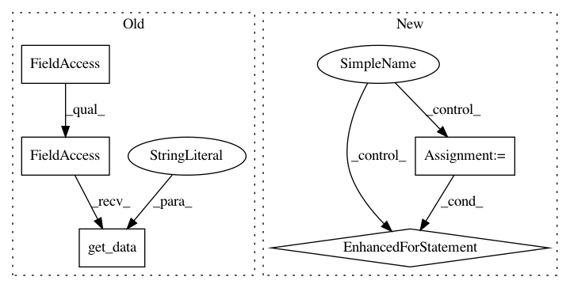

2d515b55b25a62b1f5961955e977e2fce4ae511e,src/python/pants/backend/jvm/tasks/jvm_compile/jvm_compile.py,JvmCompile,_write_to_artifact_cache,#JvmCompile#Any#Any#Any#,805
Before Change
for _, paths in p.abs_paths():
artifacts.extend(paths)
// Resources.
resources_by_target = self.context.products.get_data("resources_by_target")
add_abs_products(resources_by_target.get(compile_context.target))
// Classes.
classes_by_target = self.context.products.get_data("classes_by_target")
add_abs_products(classes_by_target.get(compile_context.target))
After Change
if ClasspathUtil.is_jar(entry):
artifacts.append(entry)
elif ClasspathUtil.is_dir(entry):
for rel_file in ClasspathUtil.classpath_entries_contents([entry]):
artifacts.append(os.path.join(entry, rel_file))
else:
// non-jar and non-directory classpath entries should be ignored
pass
In pattern: SUPERPATTERN
Frequency: 3
Non-data size: 5
Instances
Project Name: pantsbuild/pants
Commit Name: 2d515b55b25a62b1f5961955e977e2fce4ae511e
Time: 2015-10-06
Author: stuhood@gmail.com
File Name: src/python/pants/backend/jvm/tasks/jvm_compile/jvm_compile.py
Class Name: JvmCompile
Method Name: _write_to_artifact_cache
Project Name: pantsbuild/pants
Commit Name: 2d515b55b25a62b1f5961955e977e2fce4ae511e
Time: 2015-10-06
Author: stuhood@gmail.com
File Name: src/python/pants/backend/jvm/tasks/jvm_dependency_analyzer.py
Class Name: JvmDependencyAnalyzer
Method Name: targets_by_file
Project Name: pantsbuild/pants
Commit Name: 570498ed51fee6a6558bfe3fae2bf63d641d26bd
Time: 2014-02-19
Author: benjy@foursquare.com
File Name: src/python/twitter/pants/tasks/jvm_compile/jvm_compile.py
Class Name: JvmCompile
Method Name: _register_products